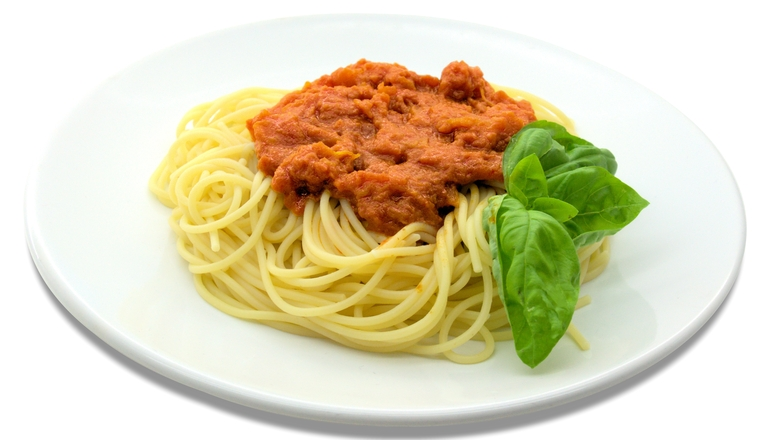
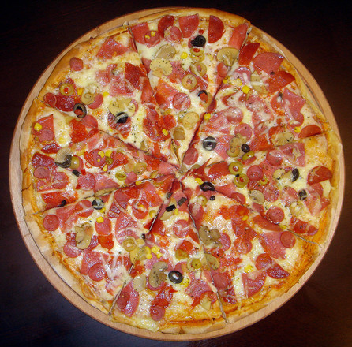
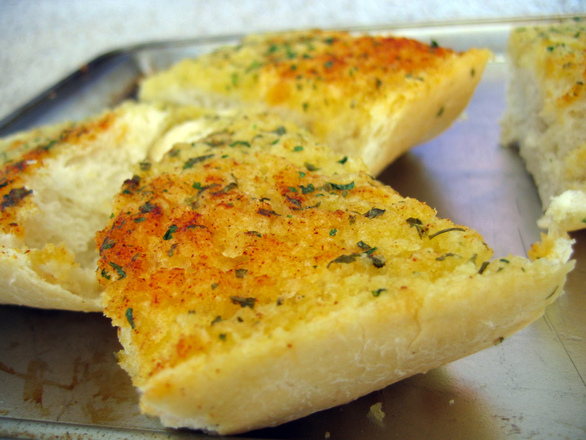

Whats for lunch, nona?
Having an italian hertiage has given me the priviledge of authentic italian cuisine, here are some basic images of the foods I enjoy in my family.


Fresh garlic bread or grated cheese is usually a go-to side and topping with these meals.
